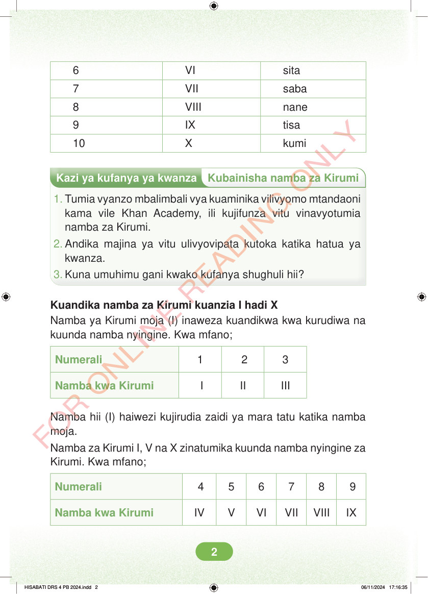

Mwendelezo wa jedwali. Namba kwa numerali ni sita. Namba kwa Kirumi ni VI. Namba kwa maneno ni sita. Namba kwa numerali ni saba. Namba kwa Kirumi ni VII. Namba kwa maneno ni saba. Namba kwa numerali ni nane. Namba kwa Kirumi ni VIII. Namba kwa maneno ni nane. Namba kwa numerali ni tisa. Namba kwa Kirumi ni IX. Namba kwa maneno ni tisa. Namba kwa numerali ni kumi. Namba kwa Kirumi ni X. Namba kwa maneno ni kumi. Kazi ya kufanya ya kwanza: Kubainisha namba za Kirumi. 1. Tumia vyanzo mbalimbali vya kuaminika vilivyomo mtandaoni kama vile Khan Academy, ili kujifunza vitu vinavyotumia namba za Kirumi. 2. Andika majina ya vitu ulivyovipata kutoka katika hatua ya kwanza. 3. Kuna umuhimu gani kwako kufanya shughuli hii? Kuandika namba za Kirumi kuanzia I hadi X. Namba ya Kirumi moja, I, inaweza kuandikwa kwa kurudiwa na kuunda namba nyingine. Kwa mfano: Numerali 1, 2 na 3. Namba kwa Kirumi I, II na III. Namba hii, I, haiwezi kujirudia zaidi ya mara tatu katika namba moja. Namba za Kirumi I, V na X zinatumika kuunda namba nyingine za Kirumi. Kwa mfano: Numerali 4, 5, 6, 7, 8 na 9. Namba kwa Kirumi IV, V, VI, VII, VIII na IX.